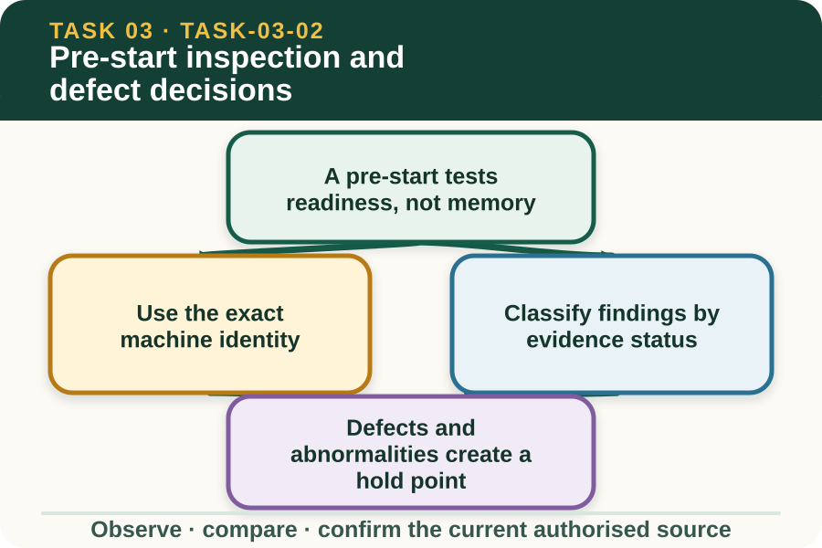

Classroom presentation · 8 slides
Pre-start inspection and defect decisions
Task 3 · 1 of 8
Pre-start inspection and defect decisions
Recognise the purpose of a pre-start and decide when a defect stops the task and must be reported.

Speaker notes
Teaching move (web-deck purpose): Use the module visual and the fictional worked example to move students from observation to a source-led decision. Ask students to name the evidence, the authority gap and the next safe communication step. Misconception and help: The lesson focuses on evidence and decision points, not operation or repair. Actual machine plus current authorised checklist equals readiness evidence. Applied action: Classify fictional inspection findings. Sort teacher-provided fictional findings into Confirmed, Abnormal and Unconfirmed. Write a factual referral for one item. Do not touch, operate, test or repair equipment as part of this website activity. Boundary: This supplementary learning draws on mapped AHCMOM202 concepts. Current signed TAS and RTO documents control cohort delivery, assessment and competency decisions; current workplace procedures, supervision and authorised sources control real work. [Sources] - Source basis: AHCMOM202 Release 1 requirements for pre-operational checks, reporting faults and maintaining use records, plus SafeWork NSW guidance on training, supervision and machinery risk. Exact inspection and exclusion procedures remain local-authority content. - Visual visual-task-03-02: Generated locally from accepted Stage 05 module headings; no external image copied. - Course visual manifest: work/pi/visuals/visual-manifest.json
Task 3 · 2 of 8
Map the learning
- A pre-start tests readiness, not memory
- Use the exact machine identity
- Classify findings by evidence status
Retrieve: What is the purpose of a tractor pre-start in this lesson?
Speaker notes
Teaching move (learning map): Use the module visual and the fictional worked example to move students from observation to a source-led decision. Ask students to name the evidence, the authority gap and the next safe communication step. Misconception and help: The lesson focuses on evidence and decision points, not operation or repair. Actual machine plus current authorised checklist equals readiness evidence. Applied action: Classify fictional inspection findings. Sort teacher-provided fictional findings into Confirmed, Abnormal and Unconfirmed. Write a factual referral for one item. Do not touch, operate, test or repair equipment as part of this website activity. Boundary: This supplementary learning draws on mapped AHCMOM202 concepts. Current signed TAS and RTO documents control cohort delivery, assessment and competency decisions; current workplace procedures, supervision and authorised sources control real work. [Sources] - Source basis: AHCMOM202 Release 1 requirements for pre-operational checks, reporting faults and maintaining use records, plus SafeWork NSW guidance on training, supervision and machinery risk. Exact inspection and exclusion procedures remain local-authority content. - Visual visual-task-03-02: Generated locally from accepted Stage 05 module headings; no external image copied. - Course visual manifest: work/pi/visuals/visual-manifest.json
Task 3 · 3 of 8
Notice the evidence
A pre-start tests readiness, not memory
The purpose of a pre-start is to compare the actual machine and planned task with the current authorised checklist and information before use. It helps identify visible damage, missing information, changed condition or another reason the machine should not enter the task.
This lesson teaches what the decision is for, not a machine inspection sequence. The exact items, access, isolation, sequence and acceptable condition come from the current manual, local procedure and supervised demonstration.
Use the exact machine identity
Records and manuals must relate to the tractor and equipment actually nominated for the job. A checklist from a similar model or a remembered process may omit a feature or condition that matters.
Before relying on information, confirm that the identifiers and version match the authorised source. If identity cannot be verified, record the uncertainty and refer it rather than transferring assumptions from another machine.
Speaker notes
Teaching move (theory idea 1): Use the module visual and the fictional worked example to move students from observation to a source-led decision. Ask students to name the evidence, the authority gap and the next safe communication step. Misconception and help: The lesson focuses on evidence and decision points, not operation or repair. Actual machine plus current authorised checklist equals readiness evidence. Applied action: Classify fictional inspection findings. Sort teacher-provided fictional findings into Confirmed, Abnormal and Unconfirmed. Write a factual referral for one item. Do not touch, operate, test or repair equipment as part of this website activity. Boundary: This supplementary learning draws on mapped AHCMOM202 concepts. Current signed TAS and RTO documents control cohort delivery, assessment and competency decisions; current workplace procedures, supervision and authorised sources control real work. [Sources] - Source basis: AHCMOM202 Release 1 requirements for pre-operational checks, reporting faults and maintaining use records, plus SafeWork NSW guidance on training, supervision and machinery risk. Exact inspection and exclusion procedures remain local-authority content. - Visual visual-task-03-02: Generated locally from accepted Stage 05 module headings; no external image copied. - Course visual manifest: work/pi/visuals/visual-manifest.json
Task 3 · 4 of 8
Use the source boundary
Classify findings by evidence status
A finding can be confirmed acceptable by the authorised source, visibly abnormal, or unconfirmed because information is missing or unreadable. This classification supports clear reporting without asking the learner to diagnose a fault.
Use observable language such as 'fresh fluid visible beneath the machine' or 'inspection status cannot be read'. Avoid unsupported labels such as 'minor leak' or 'safe enough for today'.
Defects and abnormalities create a hold point
A defect, malfunction, irregular performance, damage or unconfirmed critical status must be reported through the current workplace process. The learner should not test the problem through operation or make an unapproved repair.
The designated person decides inspection, isolation, repair and return-to-use status. The learner's role is to keep the evidence accurate, prevent unauthorised assumptions and preserve the record trail.
Speaker notes
Teaching move (theory idea 2): Use the module visual and the fictional worked example to move students from observation to a source-led decision. Ask students to name the evidence, the authority gap and the next safe communication step. Misconception and help: The lesson focuses on evidence and decision points, not operation or repair. Actual machine plus current authorised checklist equals readiness evidence. Applied action: Classify fictional inspection findings. Sort teacher-provided fictional findings into Confirmed, Abnormal and Unconfirmed. Write a factual referral for one item. Do not touch, operate, test or repair equipment as part of this website activity. Boundary: This supplementary learning draws on mapped AHCMOM202 concepts. Current signed TAS and RTO documents control cohort delivery, assessment and competency decisions; current workplace procedures, supervision and authorised sources control real work. [Sources] - Source basis: AHCMOM202 Release 1 requirements for pre-operational checks, reporting faults and maintaining use records, plus SafeWork NSW guidance on training, supervision and machinery risk. Exact inspection and exclusion procedures remain local-authority content. - Visual visual-task-03-02: Generated locally from accepted Stage 05 module headings; no external image copied. - Course visual manifest: work/pi/visuals/visual-manifest.json
Task 3 · 5 of 8
Connect evidence to action
An excluded machine needs clear status
A defect report is incomplete if the next person can still reasonably believe the machine is available. The workplace procedure controls how exclusion, tagging, access and communication are managed.
The learner should confirm that the designated person received the report and understand the recorded status. They should never invent a tag, move the machine or declare it safe to return to use.
Trace defect to decision and follow-up
A reliable defect record connects machine identity, time, task context, observable finding, person notified and status or direction received. This allows maintenance and planning roles to make decisions from evidence.
The record does not prove that the learner assessed machine serviceability or completed an RTO observation. Formal assessment and return-to-use decisions remain in the authorised systems.
Speaker notes
Teaching move (theory idea 3): Use the module visual and the fictional worked example to move students from observation to a source-led decision. Ask students to name the evidence, the authority gap and the next safe communication step. Misconception and help: The lesson focuses on evidence and decision points, not operation or repair. Actual machine plus current authorised checklist equals readiness evidence. Applied action: Classify fictional inspection findings. Sort teacher-provided fictional findings into Confirmed, Abnormal and Unconfirmed. Write a factual referral for one item. Do not touch, operate, test or repair equipment as part of this website activity. Boundary: This supplementary learning draws on mapped AHCMOM202 concepts. Current signed TAS and RTO documents control cohort delivery, assessment and competency decisions; current workplace procedures, supervision and authorised sources control real work. [Sources] - Source basis: AHCMOM202 Release 1 requirements for pre-operational checks, reporting faults and maintaining use records, plus SafeWork NSW guidance on training, supervision and machinery risk. Exact inspection and exclusion procedures remain local-authority content. - Visual visual-task-03-02: Generated locally from accepted Stage 05 module headings; no external image copied. - Course visual manifest: work/pi/visuals/visual-manifest.json
Task 3 · 6 of 8
Retrieve and check
What is the purpose of a tractor pre-start in this lesson?
- To memorise a universal operating sequence for every tractor.
- To compare actual readiness evidence with the current authorised source before use.
- To practise repairs before a supervisor arrives.
Teacher reveal
Correct. The pre-start supports a use, hold or refer decision through the local process.
Actual machine plus current authorised checklist equals readiness evidence.
Speaker notes
Teaching move (retrieval): Use the module visual and the fictional worked example to move students from observation to a source-led decision. Ask students to name the evidence, the authority gap and the next safe communication step. Misconception and help: The lesson focuses on evidence and decision points, not operation or repair. Actual machine plus current authorised checklist equals readiness evidence. Applied action: Classify fictional inspection findings. Sort teacher-provided fictional findings into Confirmed, Abnormal and Unconfirmed. Write a factual referral for one item. Do not touch, operate, test or repair equipment as part of this website activity. Boundary: This supplementary learning draws on mapped AHCMOM202 concepts. Current signed TAS and RTO documents control cohort delivery, assessment and competency decisions; current workplace procedures, supervision and authorised sources control real work. [Sources] - Source basis: AHCMOM202 Release 1 requirements for pre-operational checks, reporting faults and maintaining use records, plus SafeWork NSW guidance on training, supervision and machinery risk. Exact inspection and exclusion procedures remain local-authority content. - Visual visual-task-03-02: Generated locally from accepted Stage 05 module headings; no external image copied. - Course visual manifest: work/pi/visuals/visual-manifest.json Use option-specific feedback after the learner commits to an answer.
Task 3 · 7 of 8
Construct a source-led response
Use a fictional pre-start finding to write a defect referral. Identify machine, task context, observable evidence, uncertainty, person notified and status received.
- The nominated machine and task are…
- I observed…
- I cannot confirm…
- This creates a hold point because…
- I notified…
- The authorised status or direction is…
Success criteria
- Uses the exact fictional machine identity
- Describes evidence without diagnosis
- Shows exclusion or referral as a controlled status
- Contains no operation, repair or return-to-use instruction
Speaker notes
Teaching move (guided written response): Use the module visual and the fictional worked example to move students from observation to a source-led decision. Ask students to name the evidence, the authority gap and the next safe communication step. Misconception and help: The lesson focuses on evidence and decision points, not operation or repair. Actual machine plus current authorised checklist equals readiness evidence. Applied action: Classify fictional inspection findings. Sort teacher-provided fictional findings into Confirmed, Abnormal and Unconfirmed. Write a factual referral for one item. Do not touch, operate, test or repair equipment as part of this website activity. Boundary: This supplementary learning draws on mapped AHCMOM202 concepts. Current signed TAS and RTO documents control cohort delivery, assessment and competency decisions; current workplace procedures, supervision and authorised sources control real work. [Sources] - Source basis: AHCMOM202 Release 1 requirements for pre-operational checks, reporting faults and maintaining use records, plus SafeWork NSW guidance on training, supervision and machinery risk. Exact inspection and exclusion procedures remain local-authority content. - Visual visual-task-03-02: Generated locally from accepted Stage 05 module headings; no external image copied. - Course visual manifest: work/pi/visuals/visual-manifest.json
Task 3 · 8 of 8
Close the loop
Classify fictional inspection findings
Sort teacher-provided fictional findings into Confirmed, Abnormal and Unconfirmed. Write a factual referral for one item. Do not touch, operate, test or repair equipment as part of this website activity.
- Name the strongest evidence in the scenario.
- Explain the decision or referral it supports.
- State which current source or authorised person controls real work.
Boundary: This supplementary learning draws on mapped AHCMOM202 concepts. Current signed TAS and RTO documents control cohort delivery, assessment and competency decisions; current workplace procedures, supervision and authorised sources control real work.
Speaker notes
Teaching move (exit and application): Use the module visual and the fictional worked example to move students from observation to a source-led decision. Ask students to name the evidence, the authority gap and the next safe communication step. Misconception and help: The lesson focuses on evidence and decision points, not operation or repair. Actual machine plus current authorised checklist equals readiness evidence. Applied action: Classify fictional inspection findings. Sort teacher-provided fictional findings into Confirmed, Abnormal and Unconfirmed. Write a factual referral for one item. Do not touch, operate, test or repair equipment as part of this website activity. Boundary: This supplementary learning draws on mapped AHCMOM202 concepts. Current signed TAS and RTO documents control cohort delivery, assessment and competency decisions; current workplace procedures, supervision and authorised sources control real work. [Sources] - Source basis: AHCMOM202 Release 1 requirements for pre-operational checks, reporting faults and maintaining use records, plus SafeWork NSW guidance on training, supervision and machinery risk. Exact inspection and exclusion procedures remain local-authority content. - Visual visual-task-03-02: Generated locally from accepted Stage 05 module headings; no external image copied. - Course visual manifest: work/pi/visuals/visual-manifest.json